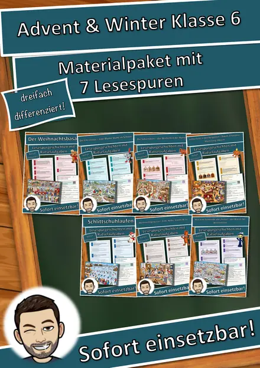
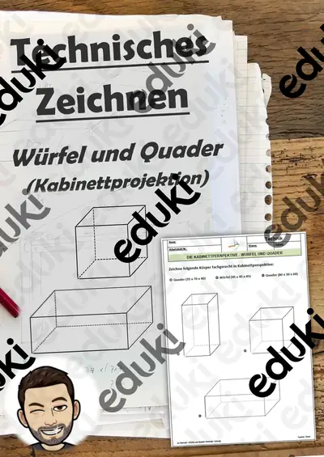

Lesespur: Das Lebkuchenhaus: Quader, Netz und Oberfläche – Lesespurgeschichte mit Rätseln (Klasse 7)
Das Lebkuchenhaus – Quader, Netz und Oberfläche – Lesespurgeschichte Mathematik (Klasse 7)Schick deine Klasse auf eine Lesespur durch die Lehrküche im Advent! Emir und Lotta aus der 7b bauen Lebkuchenhäuser für den Weihnachtsbasar – er will sofort schneiden, sie zuerst rechnen. Mathelehrer Herr Brandl hilft, Maskottchen ist der Lebkuchenmann Krümel. Von der Lehrküche über Vorlagentisch, Backblech, Schneidebrett, Zuckergussecke, Kühlregal und Dekotisch bis zum Basarstand führt der Weg. Am Ende jedes Abschnitts verrät ein Hinweis den nächsten Ort auf dem Plan – nur wer genau liest, findet den Weg und sammelt alle geheimen Buchstaben zum Lösungswort.
Die passende Lesespur für Mathematik in Klasse 7 (auch 6 und 8) – ideal im Advent zur Geometrie der Körper, zum Wiederholen von Flächeninhalt, Oberfläche und Volumen, für Stationenlernen oder Vertretungsstunden. Ohne Marken. Geeignet für Mittelschule, Realschule, Gymnasium und Gesamtschule. Das Material ist SOFORT EINSETZBAR und in DREI DIFFERENZIERUNGSSTUFEN (leicht ★ / mittel ★★ / schwer ★★★) angelegt.WICHTIG: Das komplette Material ist sowohl in FARBE als auch in SCHWARZ-WEISS enthalten – ideal zum Sparen von Druckkosten.DAS IST ENTHALTEN
- Lesespurgeschichte in 3 Niveaus (leicht, mittel, schwer)
- farbiger Plan der Lehrküche als Suchkarte
- Hörverstehen mit QR-Code zur MP3 (selbstständiges Hören mit Kopfhörern)
- vier Aufträge auf dem Weg: eine Zuordnung, eine Rechenaufgabe am Backblech, ein Quiz und ein Steckbrief
- Rätselseite (Wörter-Suchsel + Rätselfragen rund um das Lebkuchenhaus)
- Ausmalbild zum Thema
- ausführliches Lösungsblatt für die Lehrkraft mit allen Lösungen (Lesespur, Aufträge, Hörverstehen, Rätselseite)
- alles zusätzlich als komplette Schwarz-Weiß-VarianteSO GEHT DIE LESESPURDie Schülerinnen und Schüler lesen ab START, finden im Text den nächsten Ort, suchen ihn auf dem Plan und lesen bei dieser Station weiter. An jeder richtigen Station gibt es einen Buchstaben. Eingeplante Sackgassen (Spülbecken, Mülleimer, Fensterbank, Besenschrank) sind keine Stationen und dienen der Selbstkontrolle. Am Ende werden die gesammelten Buchstaben umgestellt und ergeben ein geheimes Lösungswort. (Die Lösungen sind selbstverständlich nur im Lösungsblatt für die Lehrkraft enthalten.)INHALTLICHER SCHWERPUNKTFlächen, Kanten und Ecken des Quaders, Würfel als besonderer Quader, Netze, Flächeninhalt von Rechteck und Dreieck, zusammengesetzte Flächen wie die Giebelwand, Oberfläche als Summe aller Flächen, Volumen des Quaders in cm³, das Dach als dreiseitiges Prisma, Achsensymmetrie.ABGEDECKTER LEHRPLAN (Klasse 7)
- Mathematik – Geometrie: Quader und Würfel, Netze, Oberfläche und Volumen; Flächeninhalt von Rechteck und Dreieck (LehrplanPLUS Bayern Mittelschule Mathematik 7).
- Mathematik – Flächen und Rauminhalte im Sachzusammenhang berechnen.
- Deutsch – Sachtexte sinnentnehmend lesen; einem Hörtext gezielt Informationen entnehmen (Hörverstehen mit MP3).Geeignet für Freiarbeit, Stationenlernen, Vertretungsstunden, Wochenplan und als Einstieg ins Thema.
Ähnliche Materialien

Geometrische Körper - Steckbrief Quader - Mathe - Geometrie - Differenziert

Quader Lückentext mit Wortspeicher Hörverstehen und Suchsel

Advents-Häuserstadt – Klassen-Adventskalender zum Basteln mit 24 Adventsaufgaben, 3-fach differenziert (Klasse 1–4)

Materialpaket Advent und Winter für die 6. Klasse: 7 Lesespurgeschichten mit Rätselaufgaben (Weihnachtsbasar, Saturnalien, Lichterfeste & mehr)

Technisches Zeichnen: Lerntheke zur Kabinettprojektion: 01 Würfel und Quader Zeichnen - Übungsaufgaben inkl. Lösung

Phishing und Betrug im Netz erkennen – Lesespurgeschichte mit Rätselaufgaben (Klasse 9)

Geometrische Körper - Steckbrief Kegel - Mathe - Geometrie - Differenziert